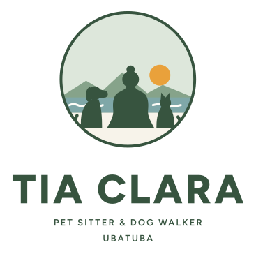
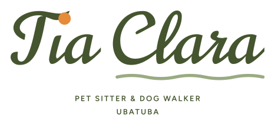
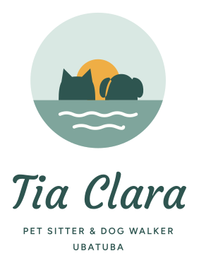

A

Com eles
Você de costas com o cão e o gato, olhando a serra e o mar.
 no WhatsApp
no WhatsAppEscolha A, B ou C. Qualquer um funciona com qualquer verde.

Você de costas com o cão e o gato, olhando a serra e o mar.
no WhatsApp
Seu nome escrito à mão: o pingo do "i" é o sol, a onda é o mar.
 no WhatsApp
no WhatsApp
No horizonte de Ubatuba, as ilhas são um gato e um cão. O sol nasce entre eles.
 no WhatsApp
no WhatsAppAntes de fechar, vamos comparar com a logo da sua colega para garantir que fique diferente.